Teshikaga
Teshikaga · Hokkaido
Teshikaga
Highlighted on the Hokkaido map.
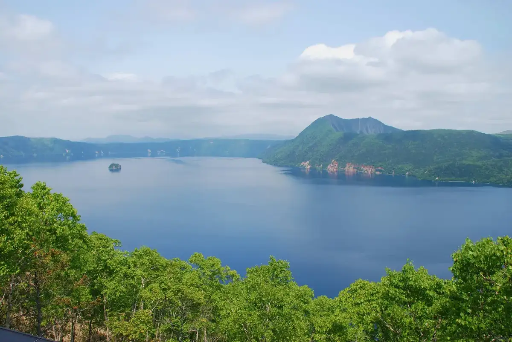
Stay
摩周温泉 民宿ニューはとや
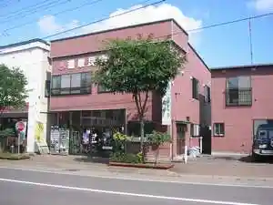
Mashuu Onsen Minshuku Nyuu Hatoya
摩周温泉 ホテル摩周
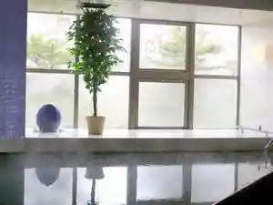
Mashuu Onsen Hoteru Mashuu
温泉民宿摩湖
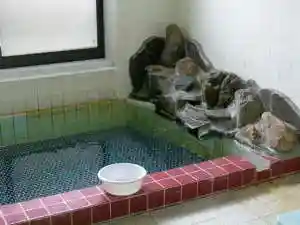
Onsen Minshuku Ma Mizuumi
ペンション Birao
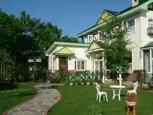
Penshon Birao
MASHU LITTLE HOUSE
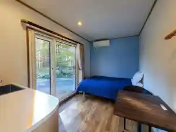
Mashu Little House
摩周湖ユースホステル
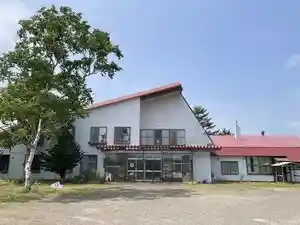
Mashuuko Yuusuhosuteru
Nature Base Hotel NUPPUKOTTE
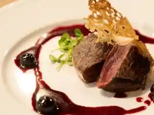
Nature Base Hotel Nuppukotte
てづくりストローベイル＆オフグリッドの宿 Waldlicht
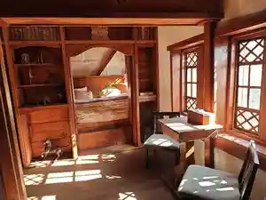
Tezukuri Sutoroobeiru & Ofuguriddo No Yado Waldlicht
ぽらりす
Porarisu
きらの宿すばる
Kirano Yado Subaru
アトレーユ
Atoreeyu
小さなオーベルジュ てぃんくる
Chiisa Na Ooberuju Teinkuru
Dining
わこっちカフェ
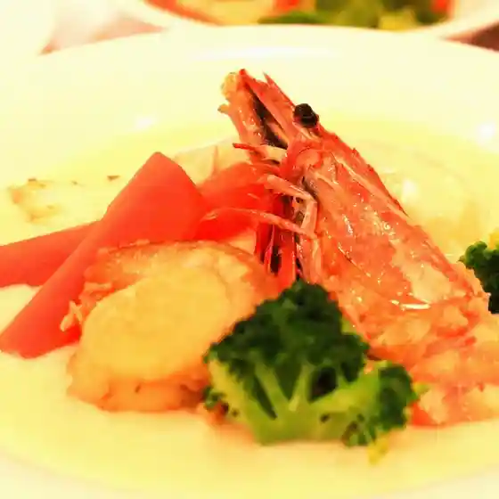
Wakotchi Kafe
もっきり家
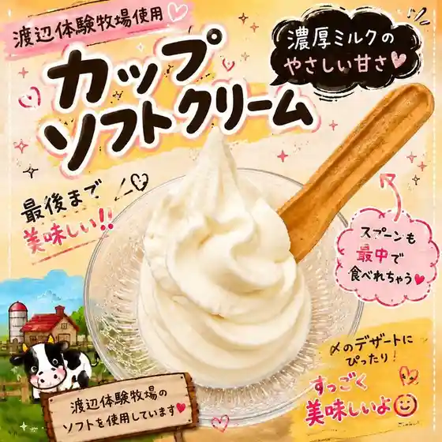
Mokkiri Ie
ヴィータ ファクトリー
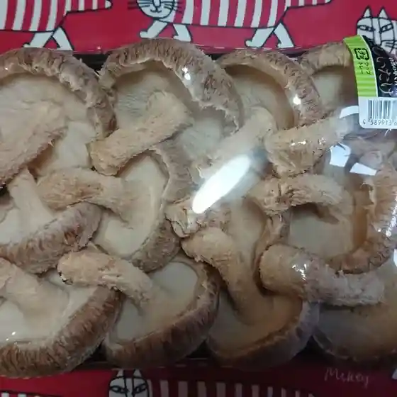
Viita Fakutorii
一味

Hitoaji
丸木舟
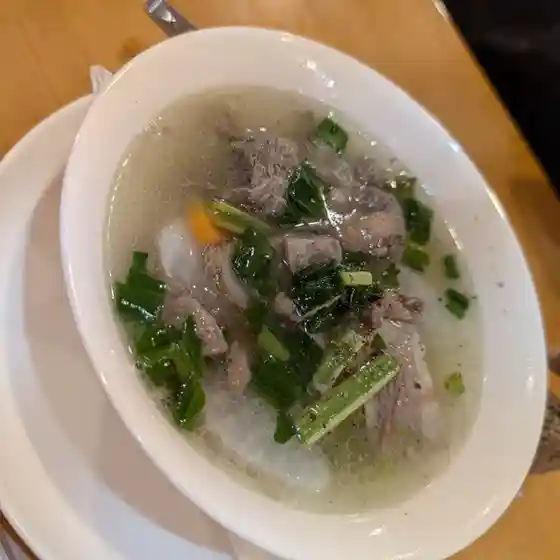
Maruki Fune
PETETOK
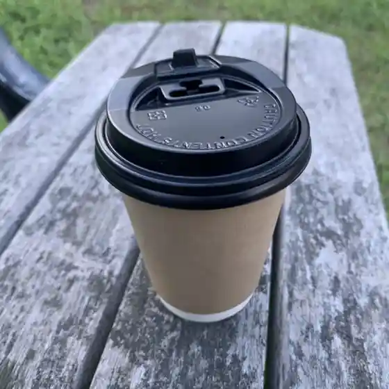
Petetok
民宿 三香温泉
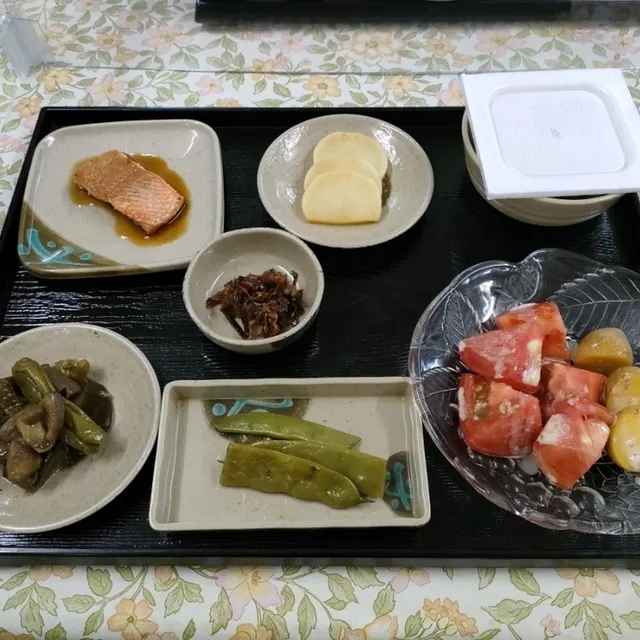
Minshuku Mika Onsen
鉄板居酒屋 こぐま
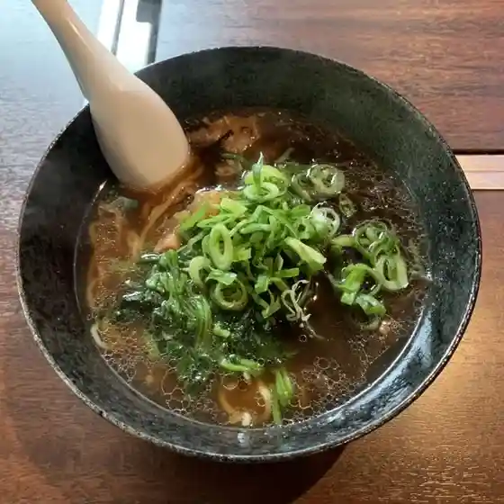
Teppan Izakaya Koguma
くまうし
Kumaushi
屈斜路湖 鶴雅オーベルジュ SoRa
Kussharoko Tsuruga Ooberuju Sora
THINK'A
Think'A
食堂と喫茶 ポッポテイ
Shokudou To Kissa Poppotei
加藤水産
Katou Suisan
ペンション ニューマリモ
Penshon Nyuumarimo
お多福食堂
O Tafuku Shokudou
フジタ企画
Fujita Kikaku
ほかほか弁当・ほかほか食堂
Hokahoka Bentou Hokahoka Shokudou
野付トドワラ
Notsuke Todowara
Guest House てぃんくる
Guest House Teinkuru
ブラゾン・ダラゾン
Burazon Darazon
昇龍軒
Noboru Ryuu Ken
カフェ&キッチン ちゅっぷ
Kafe & Kitchin Chuppu
お宿かげやま
O Yado Kageyama
レストラン ぶらりや
Resutoran Burariya